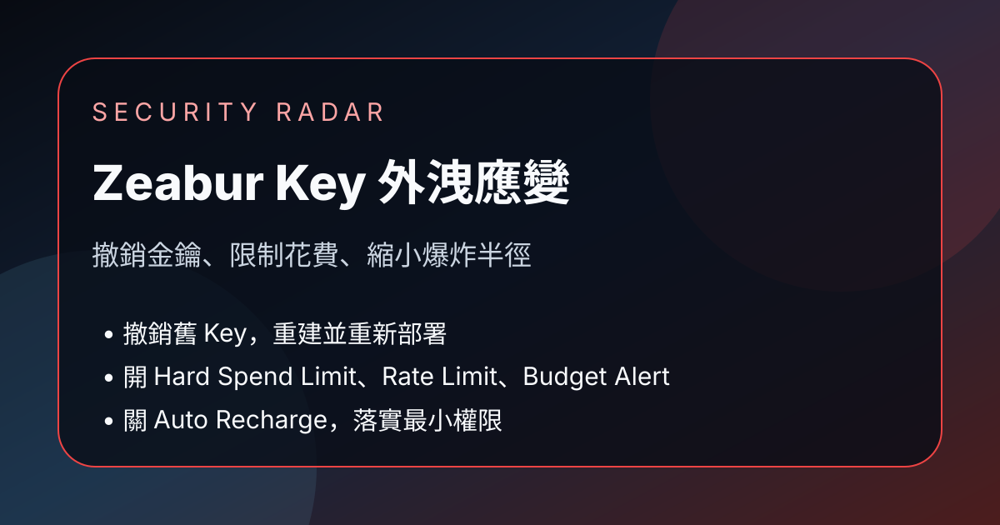

Facebook｜Generative AI 技術交流中心：Zeabur API Key 外洩後的三步緊急應變與資安健檢

一句話摘要
Facebook「Generative AI 技術交流中心」貼文整理 Zeabur API Key 疑似外洩與盜刷事件後的緊急應變：撤銷並重建所有曾放入 Zeabur 的金鑰、設定 Hard Spend Limit 與 Rate Limit、關閉 Auto Recharge 並開啟 Budget Alert，同時以 Blast Radius 與最小權限原則重新盤點 API Key 權限與環境切分。
來源脈絡
- 來源：Facebook 社團「Generative AI 技術交流中心」公開貼文。
- 作者：王士麟。
- 分享連結：https://www.facebook.com/share/p/1HvXKttnpe/?mibextid=wwXIfr
- Canonical：https://www.facebook.com/groups/gaitech/posts/1770555350795339/?mibextid=wwXIfr
- 相關 YouTube：Zeabur 出事，你今天該做這三件事／Gary Chen：https://youtu.be/ExWlrAQrfdc?si=hgRfkHql65EJmgc_
- 可見互動數：約 54 個心情、1 則留言、17 次分享。
- 注意：YouTube 影片未取得可用逐字稿；本文主要依 Facebook 公開貼文全文與 YouTube oEmbed 標題整理。
三件緊急措施
1. 撤銷與重設所有曾放入 Zeabur 的 Key
- 不只新增一把 Key；必須到原服務後台撤銷舊 Key。
- 盤點所有曾存放在 Zeabur 的秘密：Claude、OpenAI、OpenRouter、資料庫密碼、第三方 API 等。
- 更新環境變數後重新部署，並驗證線上服務真的吃到新金鑰。
- 若發現盜刷或異常用量，先保存用量圖、帳單明細與異常呼叫時間作為求償證據。
2. 設定 Hard Spend Limit 與 Rate Limit
- Rate Limit 控制請求速度，能降低瞬間濫用，但不能保證總花費不失控。
- Hard Spend Limit 才是硬性花費煞車；到達每月上限後 API 應停止運作。
- 對 AI API 而言，慢速長時間呼叫高價模型也可能累積巨額帳單，因此兩者都要設定。
3. 關閉 Auto Recharge，改用 Budget Alert
- API Key 外洩時，自動儲值等於讓攻擊者持續刷卡續杯。
- 建議改開預算警報，例如餘額低於門檻或花費達到上限八成時寄送通知。
- 若業務必須自動儲值，應降低單次儲值金額並限制每月自動儲值次數。
資安設計原則
Blast Radius：先限制最壞損害範圍
- 把每次外洩視為可能發生的事件，而不是例外。
- 設計系統時先問：這把 Key 外洩後，最多會燒到哪裡？最多會損失多少？
最小權限：不要一把 Key 打天下
- 不同專案、不同環境應使用獨立 Key。
- 開發、測試、正式環境不要共用同一組秘密。
- 每把 Key 只給剛好夠用的權限，避免小專案事故擴大成全域災難。
五到十分鐘資安健檢清單
- 舊金鑰是否有定期更換？
- 是否查過每個平台的速率限制？
- API Key 每月花費上限是否已設定？
- Auto Recharge 是否仍開著？
- 開發與正式環境是否切開？
- 每把 Key 的權限是否過大？
給 AI 開發者的備忘
- 平台事故不只影響服務可用性，也會影響金鑰、資料庫密碼、帳單與客戶資料。
- 遷移平台前，應先完成秘密輪替與帳單檢查；不要把外洩風險帶到新平台。
- 將金鑰視為短週期資產：可撤銷、可輪替、可分權、可追蹤。
原文整理
【Zeabur API Key 被盜刷、資料庫外洩！受害者必做的 3 大緊急措施與資安健檢指南】
上個周末因為 Zeabur 的資安大爆炸事件，很多人收到了一封讓人直接從床上跳起來加班的 Email，讓大家白白浪費了一個周末假期。
作者表示自己早在上次漲價事件就已退坑並搬到自架主機，所以沒有直接受害，但因為 Zeabur 上仍曾保存過一些資料，因此仍建議做一次完整緊急應變與健檢。貼文推薦 Gary Chen 的影片作為詳細應變流程參考。
【第一件事：撤銷與重設 API KEY】
最緊急的是立刻撤銷所有在 Zeabur 上的 API Key，重新申請新的。常見錯誤是只從後台建立新 Key、填回 Zeabur 或新平台，就以為安全；但只要舊 Key 沒有在平台後台手動撤銷，攻擊者仍可拿外洩 Key 持續使用。
標準流程：
- 到各 AI 平台後台，把舊 API Key 徹底撤銷。
- 建立全新的 Key。
- 更新環境變數並重新部署；若已不信任 Zeabur，則更新到新平台。
- 確認線上服務已正常使用新金鑰。
不要只檢查 Zeabur 信件提到的 API Key，應盤點所有曾放進 Zeabur 的金鑰，包括 Claude、OpenAI、OpenRouter、資料庫密碼等。全部換完後，立刻查看各家後台帳單與用量紀錄，檢查最近幾天是否有用量暴增、異常呼叫時間或陌生模型。若發現盜刷紀錄，先截圖保存用量圖表與帳單明細，作為向 Zeabur 申請求償的證據。
【第二件事：設定花費上限與速率限制】
除了換 Key，也要開啟各平台花費上限並確認速率限制。Rate Limit 管的是速度，例如每分鐘最多請求數，可防止瞬間高頻濫用；但無法限制總花費。如果攻擊者慢速持續呼叫多天，或選用昂貴模型，帳單仍可能很高。
真正能作為荷包防線的是 Hard Spend Limit，也就是每月硬性花費上限；當月花費到達設定金額後，API 直接停止運作。速率限制防瞬間濫用，花費上限防破產，兩者應一起開。
【第三件事：關閉自動儲值、開啟預算警報】
若有開 Auto Recharge，API Key 外洩時等於替攻擊者開無限暢飲。建議先關閉自動儲值，改開 Budget Alert：例如餘額低於一定金額、或當月花費達到上限八成時寄 Email 通知，再手動儲值。
若業務上非開自動儲值不可，應把每次自動儲值金額壓到最低，並設定每月儲值次數上限，讓最壞情況下的損失停在可承受範圍內。
【核心資安思維：Blast Radius 與最小權限】
真正要控制的是 Blast Radius，也就是爆炸半徑：一旦出事，最壞會波及多大範圍。除了換 Key、設花費上限、查速率限制，也要檢查每把 API Key 的權限。
不要同一把 Key 到處貼，讓開發、測試、正式環境共用。更好的做法是不同專案、不同環境使用獨立 Key，而且每把 Key 只給剛好夠用的權限。這是資安常講的最小權限原則；如此一來，即使小測試專案出事，也不會擴散到整個系統。
【資安健檢 6 大問】
- 舊的金鑰有沒有定期更換？
- 你查過平台的速率限制嗎？
- API Key 的每月花費上限有沒有設好？
- 危險的自動儲值是不是還開著？
- 開發與正式環境有沒有切開？
- 每把 Key 的權限是不是開得太大了？
【結語：零信任架構】
第三方平台什麼時候會出意外，使用者永遠無法完全掌控；但可以掌控的是最壞情況發生時，最多損失多少。現代資安的重要思維是零信任：不要假設任何平台百分之百安全，而是從一開始就把金鑰隨時可能外洩作為前提，設計進系統。
留言補充影片：強烈建議照著做的緊急應變措施、資安健檢流程：
https://youtu.be/ExWlrAQrfdc?si=hgRfkHql65EJmgc_
原始連結
Facebook 分享連結：
https://www.facebook.com/share/p/1HvXKttnpe/?mibextid=wwXIfr
Facebook canonical：
https://www.facebook.com/groups/gaitech/posts/1770555350795339/?mibextid=wwXIfr
YouTube 影片：